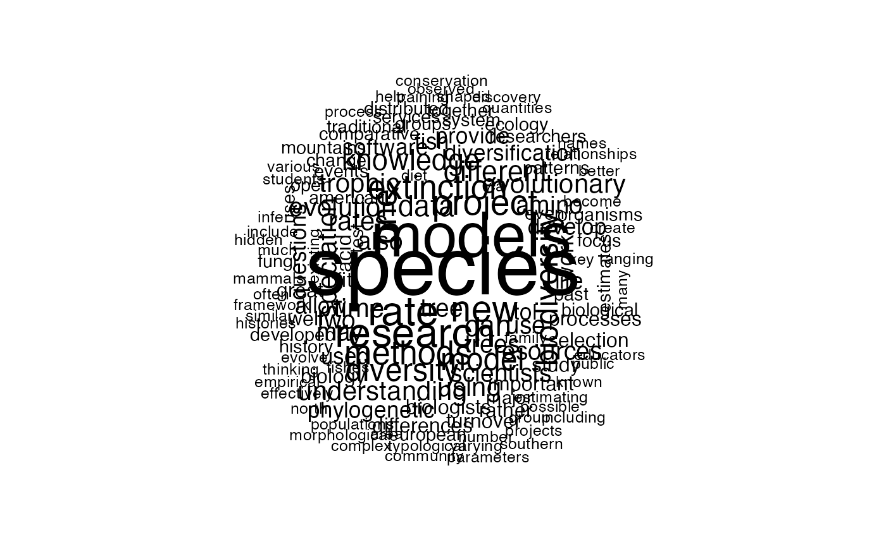
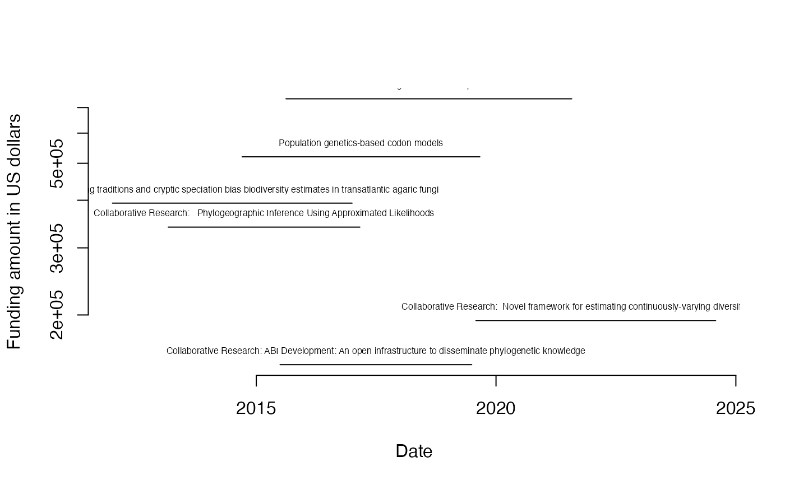

nsf_get_person.RdThis will *attempt* to get all information for a person. There are many potential problems with this. Multiple people could have the same name. People could also modify their names (with change in marital status, change in gender, whether they use a middle initial, and so forth) so do not use this naively to evaluate someone. That's what the h-index is for (I joke).
nsf_get_person(first_name = ".*", middle_initial = ".*", last_name)A data frame with grant info
# Let's check with my grants (mainly to show how to deal with weird characters, like apostrophes)
bco <- nsf_get_person("Brian", "C", "O'Meara")
#> [1] "Finished first batch"
#> [1] "Note that these are all records with this last name as a keyword"
nsf_wordcloud(bco$abstractText)

plot(x=range(c(lubridate::mdy(bco$startDate), lubridate::mdy(bco$expDate))), y=range(bco$fundsObligatedAmt), type="n", log="y", bty="n", xlab="Date", ylab="Funding amount in US dollars")
for (grant.index in sequence(nrow(bco))) {
lines(x=c(lubridate::mdy(bco$startDate)[grant.index], lubridate::mdy(bco$expDate)[grant.index]), y=rep(bco$fundsObligatedAmt[grant.index],2))
text(x=mean(c(lubridate::mdy(bco$startDate)[grant.index], lubridate::mdy(bco$expDate)[grant.index])), y=as.numeric(bco$fundsObligatedAmt[grant.index]), labels=bco$title[grant.index], pos=3, cex=0.5)
}
